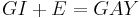

De: La Frikipedia, la enciclopedia extremadamente seria.
De: La Frikipedia, la enciclopedia extremadamente seria. De: La Frikipedia, la enciclopedia extremadamente seria.
Ley que establece que si tomamos cualquier nombres de una banda en inglé y la traducimos al español la banda sonara un vergo poquito gilipllas en palabras del mismisimo Ronaldinho:
«si coges un grupo musical en ingles y lo traduces al español sera lo peor y mas gay que le puedas hacer a ese grupo»
~ Ronaldinho en un lapso de inspiración
Esto pasa gracias a los contenidos de atomos y protones que hablan español cada letra utilizada en el inglé asi que lo podemos tomar así
 En el año 1215 el famoso científico Ronaldinho pronuncio una ley que decia lo siguiente.Años mas tarde Jesús de Chamberí completó esta formula con el efecto contrario, los grupos en español pasarían a ser grandes bandas de Heavy Metal.
Si traducimos un grupo del inglés al castellano este grupo perdera fuerza e incluso puede que llegue a parecer gay.
Véase: Anexo:Grupos de música ingleses traducidos al castellano
En este caso pasa el efecto totalmente contrario los grupos mas pateticos pasan a ser grandes grupos de la escena del heavy metal.
Autor(es):